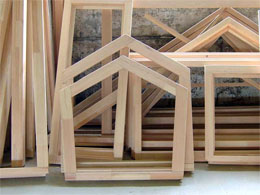
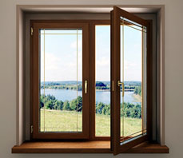

Планируя замену отслужившего деревянного окна, большинство людей не в последнюю очередь ориентируются на количество денежных средств, которое необходимо вложить в проект.
Многолетний опыт наших сотрудников в области производства и монтажа оконных конструкций различной сложности свидетельствует о том, что существует множество способов снизить конечную стоимость изделия без потери качественных показателей. Удешевление осуществляется за счет использования менее дорогостоящих материалов для производства и отделки готовых конструкций, а также за счет использования при производстве и монтаже более дешевых технологий. В любом случае, наши специалисты помогу вам подобрать наиболее подходящее именно для вас сочетание цены и качества.
Для того чтобы произвести ориентировочный расчет стоимости деревянных окон, необходимо знать основные факторы, влияющие на конечный результат.
Итоговая стоимость работ определяется путем расчета, осуществляемого профессионалом нашей компании, на основании правильно произведенных замеров и складывается из следующих показателей:
Материал, из которого планируется изготовить окно.
Современные деревянные окна изготавливаются из различных пород древесины, изначальную стоимость которых необходимо учитывать при планировании бюджета покупки. Дуб, бук или ясень – относятся к твердым породам древесины, мало подвержены гниению, но достаточно дороги и относятся к материалам, из которых производят дорогие элитные окна. Сосна и лиственница – более мягки сорт древесины, но это не значит что окна, произведенные из этих материалов, проигрывают в прочности. Более низкая стоимость лиственницы и сосны обусловлена не низким качеством древесины, а значительно большей распространенностью произрастания, а, следовательно, более дешевой добычей.
Форма оконного проема.
Для расчета стоимости деревянного окна необходимо учитывать, что оконные проемы бывают стандартных размеров и нестандартных. Производство нестандартных окон является более дорогостоящим, так как необходима специальная настройка оборудования и дополнительные материалы.
Размер оконного проема.
Конструкция деревянной рамы по сути своей достаточно проста и имеет невысокую себестоимость. Повышение стоимости окна с увеличением размера проема происходит за счет удорожания количества фурнитуры и величины стеклопакета, которым комплектуется окно.
Выбор так называемой «оконной системы». От того, сколько камер будет иметь ваше деревянное окно, напрямую зависит, ширина и длина профиля, количество используемой фурнитуры, а также размер стеклопакетов.
Количество способов, которыми вы планируете пользоваться при открывании окна, тоже влияет на его стоимость. К примеру, окно, открываемое всего одним, распашным способом будет дешевле, чем точно такое же окно, которое можно открывать в двух плоскостях для проветривания помещения, так как в нем используется значительно меньшее количество фурнитуры.
Выбор стеклопакета, то есть определение типа стекла, которым будет комплектоваться ваше окно и количество камер стеклопакета тоже отразится на итоговой стоимости.
Хотя цветовое решение не сильно влияет на конечную цену изделия, но от количества и стоимости используемых грунтовочных и лакокрасочных материалов результат расчетов тоже может уменьшиться или возрасти.
Ну и, наконец, последний немаловажный фактор стоимости деревянного окна –
монтаж.
Наши специалисты осуществляют монтаж по системе Иллбрук, предполагающей использование пароизоляционных и гидроизоляционных лент.
Если же по какой-либо причине, не зависящей от наших мастеров такой монтаж не возможен, то окно крепится в проеме, щели запениваются, а затем пена прикрывается изнутри откосами.
Как видите, стоимость деревянных окон может варьироваться в зависимости от множества факторов, учесть которые может только грамотный специалист. Поэтому, самый лучший способ рассчитать стоимость вашего нового окна - вызвать замерщика. Сотрудник нашей компании в удобное для вас время произведет грамотный замер оконного проема, расчет необходимых материалов, а также окончательную стоимость производства и монтажа деревянных окон.